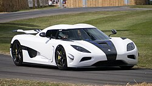

Koenigsegg Agera N 2015

Koenigsegg Agera N 2015 — це унікальний гіперкар, створений шведською компанією Koenigsegg Automotive AB в єдиному екземплярі (1-of-1). Автомобіль зійшов зі стапелів шведської фабрики навесні 2011 року. Це був не просто черговий автомобіль — це найперший в історії Koenigsegg екземпляр Agera з правим розташуванням керма (RHD). Його замовив відомий британський бізнесмен і засновник компанії Saywell International — Пітер Сейвелл. Сейвелл є культовою фігурою в колах суперкарів Великобританії; він відомий своєю пристрастю до ексклюзивних авто та благодійною діяльністю на треку Гудвуд. Ця машина стала вже четвертим за рахунком Koenigsegg у його гаражі (після моделей CC8S, CCR та CCX).Цікаво, що Сейвелл свідомо вибрав стандартну Agera замість потужнішої Agera R, яка щойно з'явилася на ринку, оскільки вважав за краще заправляти машину звичайним бензином, а не біопаливом E85, необхідним для "R"-версії. У першій версії авто мало білий перламутровий колір із тонкими елементами під колір британського прапора.